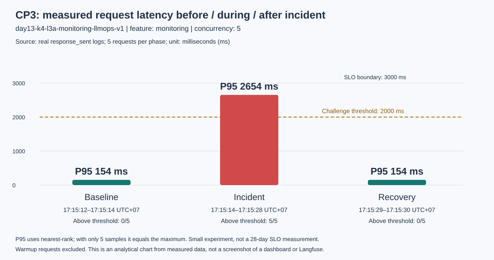

Ảnh chụp trang này là evidence phân tích số liệu đã lưu. Các số đo đều lấy từ lần chạy thật; các query riêng của challenge không được đưa vào artifact.

| Phase | UTC+07 window | P50 xử lý (ms) | P95 xử lý (ms) | P95 client (ms) | TTFT P95 (ms) | Error |
|---|---|---|---|---|---|---|
| Baseline | 2026-09-29T17:15:12+07:00 – 17:15:14 | 153.0 | 154.0 | 822.1 | 50.0 | 0.0% |
| Incident | 2026-09-29T17:15:14+07:00 – 17:15:28 | 2654.0 | 2654.0 | 13325.0 | 50.0 | 0.0% |
| Recovery | 2026-09-29T17:15:29+07:00 – 17:15:30 | 153.0 | 154.0 | 822.6 | 50.0 | 0.0% |
{
"service": "api",
"latency_ms": 2653,
"ttft_ms": 50,
"tokens_in": 35,
"tokens_out": 175,
"cost_usd": 0.00273,
"quality_score": 0.8,
"tool_name": "retrieval",
"tool_success": true,
"payload": {
"answer_preview": "Starter answer. You should improve this output logic and add better quality chec..."
},
"event": "response_sent",
"correlation_id": "req-67ed9c57",
"session_id": "k4-l3a-challenge-s01",
"user_id_hash": "dde2e75b20cf",
"env": "dev",
"feature": "monitoring",
"model": "claude-sonnet-4-5",
"level": "info",
"ts": "2026-09-29T10:15:25.797315Z"
}
Correlation ID: req-67ed9c57
Trace ID: 4141305c45dfe206c515364337a29a58
Root: 2659.0 ms · Retrieval: 2501.0 ms · Generation: 152.0 ms
Mở trace thật trong Langfuse để chụp waterfall (14-incident-trace.png)
Raw input/output không capture; user ID đã hash. Các observation cùng parent root. Việc tắt incident đã được kiểm chứng bằng một lượt recovery với cùng input/concurrency.
Dashboard 60 phút chứa cả traffic practice cũ. Bảng trên lọc theo correlation ID từng lượt chạy để tránh gán metric của request khác cho challenge.